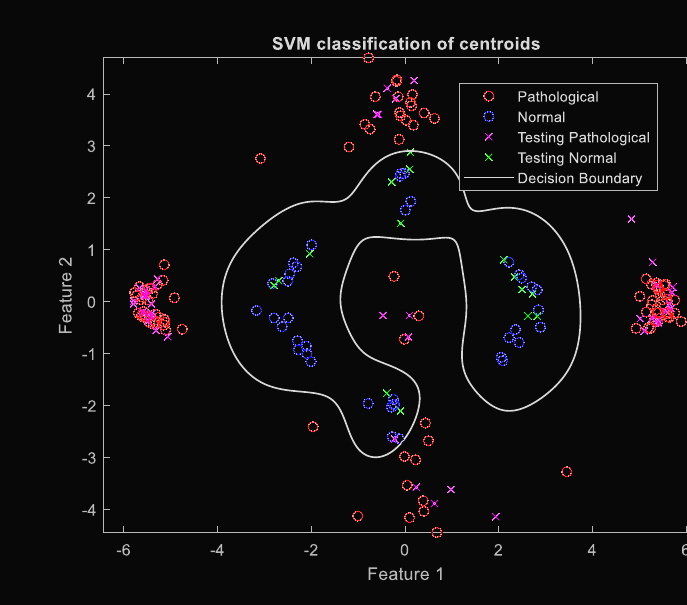

Filtering effects on pathological ECG classification
A comparison of four filters on synthetic ECG, then arrhythmia classification on MIT-BIH recordings at 97.85% accuracy. The part I learned most from was finding out afterwards which of my own results could and could not be trusted.
Question
Can the ECG changes reported in myopericarditis be picked up by an SVM classifier, and how much does the choice of pre-processing filter matter to the features provided to the classifier.
Approach
Three separate short studies in MATLAB. Four filter (Butterworth, FIR, Bessel, wavelet) methodologies were compared on a synthetic ECG with 20 dB injected noise, scored by cross-correlation with the clean signal. A 1 000-signal simulated myopericarditis set, built from the literature's reported P, R and T-wave changes, was classified from short-time Fourier features with an SVM. Arrhythmia in the MIT-BIH databases was classified from PCA and k-means features of the QRS complexes with an RBF SVM, then re-run under added noise, different filters and a change of sampling rate.
Results
The wavelet filter preserved the pulse best (correlation 0.99 against 0.58 for Butterworth, whose fault was phase shift, not magnitude or shape. At zero-phase it matched at 0.99). The arrhythmia classifier reached 97.85% accuracy and held up under 5 dB of noise, but downsampling from 360 to 128 Hz dropped specificity to 50%, because the QRS window was defined in samples. The simulated myopericarditis classifier reached 84% sensitivity with 100% specificity, on simulated data only.

What I learned
This was my first research project and looking back the main problem was the structure. I started with the question of whether myopericarditis can be classified from the ECG, but there was no myopericarditis data to work with, so I ended up simulating the waveform changes from the literature with probabilities and magnitudes I picked myself, and then classifying arrhythmia on real data instead as the closest thing available. Each of the three parts was done properly on its own, but they do not add up to an answer to the original question, and the report cannot say whether the method would work on the condition it was named after.
The validation was also decided after the pipeline was built rather than before. The filters were compared on one synthetic pulse with one type of noise, the best one was picked by correlation with the clean signal, and only two of the four were carried into the classification tests. The robustness tests on noise, sampling rate and segment length were added afterwards as I thought of them. That is how the sampling rate difference between the two MIT-BIH databases (360 Hz and 128 Hz) was only found late instead of being controlled from the start. The accuracy was also measured on cluster centroids and not on records, so it does not say how well the classifier would do on a new patient.
Two smaller things I did learn and still use. When a metric gives a bad number, work out why before changing anything, as the correlation blamed the Butterworth filter's magnitude response when the actual problem was phase shift and a zero-phase pass fixed it. And test against the ways real data can differ, not just added noise, since the classifier survived 5 dB of noise but broke on a change of sampling rate because the QRS window was defined in samples.
In hindsight, the things I would change are the things I did do on the grid cell project two years later. Decide on one question and what evidence would answer it before writing any code, get the real data first or scale the claim down to what a simulation can show, hold out data at the level the claim is made at, and treat checking the analysis against a known reference as the first result rather than something to do at the end.